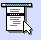
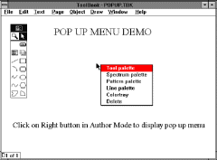
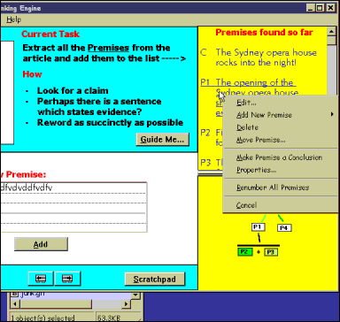

Australian Toolbook User Group

A Popup menu that pops up next to your mouse as you click on something is implemented via the
popupmenu
command. You can define your popup menus in openscript or simply specify a menu that you have created using the menu editor. Both methods of defining a menu have their place - using the menu editor is easiest.
Determining the the result of a Popup Menu user selection Solution by Tim Barham
Question: 1have been trying to get a popup menu to respond to mouse clicks I have a menu resource called "ECRC" that pops up when you enter the "hotbox"
to handle mouseenter
get popupmenu("0,0", menubar "ECRC", \
"Control Menu")
end
The above code is located at the Book Level. The menu pops up fine, but I cannot get any of my code to respond to it. For example, there is a menu item called "Exit ECRC Tour". How can I get that to close the toolbook after you popup the menu and then select it?
Answer: popupMenu function returns the selected menu item and its alias (if it has one). So, for example, have code like this:
menuSelection = item 1 of \
popupmenu("0,0", menubar "ECRC", \
"Control Menu")
conditions
when menuSelection = "ExitECRCTour"
-- do stuff
when menuSelection = ...
end conditions
Checking and Unchecking Popup Menu Items Solution by Jim Warner, Asymetrix
Question: Is there a way to check/uncheck menu items of a PopupMenu())?
Answer: The popMenu () function (tb40win.dll) does allow the displaying of a check mark next to a menu item. This is annotated in the menu items list with an '*' before the menu item in question (see on-line help for popMenu). If you want to check and uncheck any item, you will have to update the "menuItems" parameter (list) such that when the function is used again the new item has the check mark.
It is common to list each item as a property of some object (maybe the book) whereby the property is either TRUE or FALSE on whether it has a check mark or not. The menuItems list can then be built from enumerating these properties by adding an '*' for each item in the list.
Pop Up menus via Right Mouse Button - in Author mode Solution by Jonathan Astley
I wanted to use a pop up menu in Author mode - one that I could activate with the right mouse button. This pop up menu would be customised to allow me to execute handlers without needing to move the mouse cursor to the menubar of the book everytime. Instead it would appear conveniently next to the mouse cursor.
Editors note:
This article applies to version 1.53 of Toolbook - I haven’t tried it in later versions - abut have no reason to believe it wouldn't work. Of course Toolbook Versions 3 and above already have the right mouse button click bring up a predefined authoring menu - so this functionality would be lost when implementing the code below.
Since Toolbook 1.53 currently only supports the use of the right mouse button in Reader mode only, I had to trap a Right ButtonUp event from Windows to allow me to use the right mouse button in Author mode. The Openscript function "TranslateWindowMessage" enabled me to achieve this by trapping the defined event and sending the specified handler. Event names and their hexadecimal values are listed in the WINDOWS.H file which is included with C/C++ Windows compliant compilers. Values must be converted to decimal for use by Toolbook.
In this example we have set Toolbook to send a message handler "RButtonUp" when event DECIMAL value 517 (WM_RBUTTONUP) occurs. This only need be specified once.
EnterBook Handler
to handle EnterBook
translateWindowMessage for sysClientHandle
before 517 send RButtonUp to this book
-- WM_RBUTTONUP
end
end
For the RButtonUp handler, I started by defining in the handler the linkDLL statement for the required function "popMenu" (see page 60 of the Asymetrix DLL Reference manual) . This is a function that displays a popup menu at a designated position. It is one of a number of functions available in the TBKWIN.DLL provided with Toolbook.
RButtonUp Handler
to handle RButtonUp
set popUpList to NULL
-- items which will be displayed
push "Item4" onto popUpList
push "Item3" onto popUpList
push "Item2" onto popUpList
push "Item1" onto popUpList
linkdll "tbkwin.dll"
INT popMenu(WORD,STRING,INT, \
STRING,STRING,STRING)
end
get popMenu(sysWindowHandle, \
sysPageScroll,sysMagnification,\
sysMousePosition,popUpList,NULL)
Conditions
when it is 1
-- line number of selected item
-- which user chose
send Message1
when it is 2
send Message2
when it is 3
send Message3
when it is 4
send Message4
end conditions
unlinkDLL "tbkwin.dll"
end RButtonUp
I installed the translateWindowMessage in an enterbook handler since it only needs to be done once. Everytime the right mouse button is clicked, Toolbook propagates a RButtonUp message for the WM_RBUTTONUP event. The RButtonUp handler links in the popMenu function, creates the list items, calls the popMenu function to display the pop up list and processes the returned number of the item selected from the list. For each item, a message can be assigned to trigger another handler and perform the required task.

This pop up works in Author mode only. In Reader mode Toolbook traps the WM_RBUTTONUP and sends a "rightButtonUp" message. To execute this pop up in Reader mode, write a rightButtonUp handler which activates the RButtonUp handler, or simpler still, rename RButtonUp to rightButtonUp, not forgetting to change the message name sent in the translateWindowMessage handler.
How to make a popup menu appear next to a hotword Solution by Andy Bulka
To get a popup menu to appear next to your hotword, simply specify the position you want to the popup menu to appear in the popupmenu command's first parameter. The value to pass is the 'loc' paramter you get from a buttonClick handler e.g.
to handle buttonClick loc get popupMenu( loc, menu "PremiseList" ) end
Put the above code in your hotword's script. If you want all your hotwords to act the same, create a shared script and assign the shared script to the hotwords you want to have this common behaviour.

To access thousands more tips offline - download Toolbook Knowledge Nuggets